Práctica 3: Señales continuas
Autores:
- Argaez Herrera Antonia Margarita
- Leguizamo Lara Daniela Denisse
- Rojas Solis Juan Carlos
Grupo: 2TV1
Profesor:
Dr. Rafael Martínez Martínez
Contents
Objetivos
- Manipulación básica de MATLAB
- Gráficas de señales reales y complejas continuas
- Transformación de señales continuas (escalamientos y traslaciones)
- Calculo de energía y potencia de señales continuas
Introducción
¿Qué es MATLAB?
MATLAB (abreviatura de MATrix LABoratory, «laboratorio de matrices») es un sistema de cómputo numérico que ofrece un entorno de desarrollo integrado (IDE) con un lenguaje de programación propio (lenguaje M). Está disponible para las plataformas Unix, Windows, Mac OS X y GNU/Linux.
Entre sus prestaciones básicas se hallan la manipulación de matrices, la representación de datos y funciones, la implementación de algoritmos, la creación de interfaces de usuario (GUI) y la comunicación con programas en otros lenguajes y con otros dispositivos hardware. El paquete MATLAB dispone de dos herramientas adicionales que expanden sus prestaciones, a saber, Simulink (plataforma de simulación multidominio) y GUIDE (editor de interfaces de usuario - GUI). Además, se pueden ampliar las capacidades de MATLAB con las cajas de herramientas (toolboxes); y las de Simulink con los paquetes de bloques (blocksets).
Es un software muy usado en universidades y centros de investigación y desarrollo. En los últimos años ha aumentado el número de prestaciones, como la de programar directamente procesadores digitales de señal o crear código VHDL.
En 2004, se estimaba que MATLAB era empleado por más de un millón de personas en ámbitos académicos y empresariales. [1]
Alternativas a MATLAB
- GNU Octave
GNU Octave puede ser la alternativa más conocida a MATLAB. En desarrollo activo durante casi tres décadas, Octave se ejecuta en Windows, Mac y Linux, y está empaquetado para la mayoría de las distribuciones principales. Si está buscando un proyecto que sea lo más parecido posible al lenguaje MATLAB real, Octave puede ser una buena opción para usted; se esfuerza por una compatibilidad exacta, por lo que muchos de sus proyectos desarrollados para MATLAB pueden ejecutarse en Octave sin necesidad de modificaciones.
Octave tiene licencia GPL, y su código fuente se puede encontrar en el sitio FTP de GNU.
- Scilab
Scilab es otra opción de código abierto para computación numérica que se ejecuta en todas las plataformas principales: Windows, Mac y Linux incluidos. Scilab es quizás la alternativa más conocida fuera de Octave, y (como Octave) es muy similar a MATLAB en su implementación, aunque la compatibilidad exacta no es un objetivo de los desarrolladores del proyecto.
Scilab se distribuye como fuente abierta bajo la licencia CeCILL compatible con GPL, y su código fuente está disponible en su página oficial.
- Sage
SageMath es otro sistema de software de matemáticas de código abierto que podría ser una buena opción para aquellos que buscan una alternativa de MATLAB. Está construido sobre una variedad de conocidas bibliotecas de computación científica basadas en Python, y su propio lenguaje es sintácticamente similar a Python. Tiene muchas características que incluyen una interfaz de línea de comandos, cuadernos basados en navegador, herramientas para incrustar fórmulas en otros documentos y, por supuesto, muchas bibliotecas matemáticas.
SageMath está disponible bajo una licencia GPL, y su código fuente se puede encontrar en el sitio web del proyecto. [2]
Desarrollo
A continuación se presentan los problemas resueltos.
Problema 1
Crea una función que se llame fun1 y reciba dos parametros  y
y  la función debe regresar la evaluación
la función debe regresar la evaluación  , esta función debe trabajar con
, esta función debe trabajar con  y 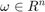. Debe mostrar su código en el reporte (sin ejecutar).
y 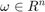. Debe mostrar su código en el reporte (sin ejecutar).
clear all;
close all;
a=input("Introduce el valor de a: ");
w=input("Introduce el valor de w: ");
fun1(a,w);
El contenido de fun1 es el siguiente:
function[resultado]= fun1(a, w)
resultado=(a)./(a.^(2)+w.^(2));
end
Problema 2
Construya una función que gráfique funciones de  en el formato de su elección y pruebe su código mostrando la gráfica de
en el formato de su elección y pruebe su código mostrando la gráfica de  vs en el intervalo
vs en el intervalo ![$[-2,2]$](SySPrac3_eq01169792831847459841.png) para
para  , no debe incluir el código, solo el uso de la función para mostrar la gráfica.
, no debe incluir el código, solo el uso de la función para mostrar la gráfica.
a=1; w=[-2:0.01:2]; mifigura(w,fun1(a,w));

Problema 3
Este problema no se hace.
Problema 4
Realiza las mismas operaciones que Lathi en las secciones M1.1 a M1.4 que se encuentra al final del capítulo 1 y antes de la sección de problemas, cambie los inline por funciones anonimas.
Problema M1.1 Ejercicio 1
f=@(t) (exp(-t).*cos(2*pi*t));
t=0;
f(t);
fprintf('\n El resultado de la evaluacion de la funcion f es: %f', f(t));
fprintf('\n');
El resultado de la evaluacion de la funcion f es: 1.000000
Ejercicio 2
f=@(t) (exp(-t).*cos(2*pi*t));
t=[-2:2];
f(t);
fprintf('\n El resultado de la evaluacion de la funcion f es: %f', f(t));
fprintf('\n');
plot(t,f(t));
xlabel('t');
ylabel('f(t)');
grid on;
El resultado de la evaluacion de la funcion f es: 7.389056 El resultado de la evaluacion de la funcion f es: 2.718282 El resultado de la evaluacion de la funcion f es: 1.000000 El resultado de la evaluacion de la funcion f es: 0.367879 El resultado de la evaluacion de la funcion f es: 0.135335

Ejercicio 3
f=@(t) (exp(-t).*cos(2*pi*t));
t=[-2:0.01:2];
f(t);
%fprintf('\n El resultado de la evaluacion de la funcion f es: %f', f(t));
%fprintf('\n');
plot(t,f(t));
xlabel('t');
ylabel('f(t)');
grid on;

Problema M1.2 Ejercicio 1
u=@(t) (t>=0);
t=[-2:2];
u(t);
plot(t,u(t));
xlabel('t');
ylabel('u(t)');
grid on;

Ejercicio 2
u=@(t) (t>=0);
t=[-2:0.01:2];
u(t);
plot(t,u(t));
xlabel('t');
ylabel('u(t)');
grid on;
axis([-2 2 -0.1 1.1]);

Ejercicio 3
p=@(t) ((t>=0)&(t<1));
t=[-1:0.01:2];
p(t);
plot(t,p(t));
xlabel('t');
ylabel('p(t)= u(t)-u(t-1)');
grid on;
axis([-1 2 -0.1 1.1]);

Problema M1.3 Ejercicio 1
g=@(t) (exp(-t).*cos(2*pi*t).*(t>=0));
t=[-2:0.01:2];
g(2*t+1);
plot(t,g(2*t+1));
xlabel('t');
ylabel('g(2*t+1)');
grid on;

Ejercicio 2
g=@(t) (exp(-t).*cos(2*pi*t).*(t>=0));
t=[-2:0.01:2];
g(-t+1);
plot(t,g(-t+1));
xlabel('t');
ylabel('g(-t+1)');
grid on;

Ejercicio 3
g=@(t) (exp(-t).*cos(2*pi*t).*(t>=0));
t=[-2:0.01:2];
h=g(2*t+1) + g(-t+1);
plot(t,h);
xlabel('t');
ylabel('h(t)');
grid on;

Problema M1.4 Ejercicio 1
x=@(t) (exp(-t).*((t>=0)&(t<1)));
t=[0:0.01:1];
E_x=sum(x(t).*x(t)*0.01)
E_x =
0.4367
Ejercicio 2
x=@(t) (exp(-t).*((t>=0)&(t<1)));
t=[0:0.001:1];
E_x=sum(x(t).*x(t)*0.001)
E_x =
0.4328
Ejercicio 3
x_cuadrada=@(t) (exp(-2*t).*((t>=0)&(t<1)));
E_x=quad(x_cuadrada,0,1)
E_x =
0.4323
Ejercicio 4
g_cuadrada=@(t) (exp(-2*t).*(cos(2*pi*t).^2).*(t>=0));
t=[0:0.001:100];
E_g=sum(g_cuadrada(t)*0.001)
E_g =
0.2567
Ejercicio 5
g_cuadrada=@(t) (exp(-2*t).*(cos(2*pi*t).^2).*(t>=0));
E_g=quad(g_cuadrada,0,100)
E_g =
0.2562
Ejercicio 6
g=@(t) (exp(-t).*cos(2*pi*t).*(t>=0));
t=[-2:0.001:2];
h_cuadrada=(g(2*t+1)+g(-t+1)).^2;
E_h=sum(h_cuadrada*0.001)
E_h =
0.3769
Ejercicio 7
g=@(t) (exp(-t).*cos(2*pi*t).*(t>=0));
h_cuadrada=@(t) (g(2*t+1)+g(-t+1)).^2;
E_h=quad(h_cuadrada,-2,2)
E_h =
0.3761
Problema 5
Resuelve el problema 1.2.2 usando las herramientas del paso anterior.
Ejercicio 1.2.2 Señal x(t)
x=@(t) ((-t).*((t<0)&(t>-4))) +((t).*((t>0)&(t<2)));
t=[-10:0.0001:10];
x(t);
plot(t,x(t));
xlabel('t');
ylabel('x(t)');
axis([-5 3 -1 5]);
grid on;

Inciso a) Señal x(t-4)
t=[-10:0.0001:10];
x(t-4);
plot(t,x(t-4));
xlabel('t');
ylabel('x(t-4)');
axis([-1 7 -1 5]);
grid on;

Inciso b) Señal x(t/1.5)
x=@(t) ((-t).*((t<0)&(t>-4))) +((t).*((t>0)&(t<2)));
t=[-10:0.0001:10];
x(t/1.5);
plot(t,x(t/1.5));
xlabel('t');
ylabel('x(t/1.5)');
axis([-7 4 -1 5]);
grid on;
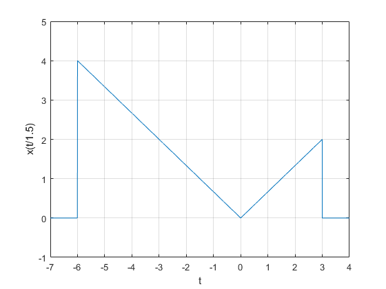 Inciso c) Señal x(-t)
x=@(t) ((-t).*((t<0)&(t>-4))) +((t).*((t>0)&(t<2)));
t=[-10:0.0001:10];
x(-t);
plot(t,x(-t));
xlabel('t');
ylabel('x(-t)');
axis([-3 5 -1 5]);
grid on;
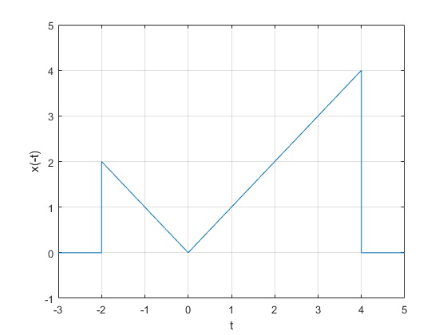 Inciso d) Señal x(2t-4)
x=@(t) ((-t).*((t<0)&(t>-4))) +((t).*((t>0)&(t<2)));
t=[-10:0.0001:10];
x(2*t-4);
plot(t,x(2*t-4));
xlabel('t');
ylabel('x(2t-4)');
axis([-1 4 -1 5]);
grid on;
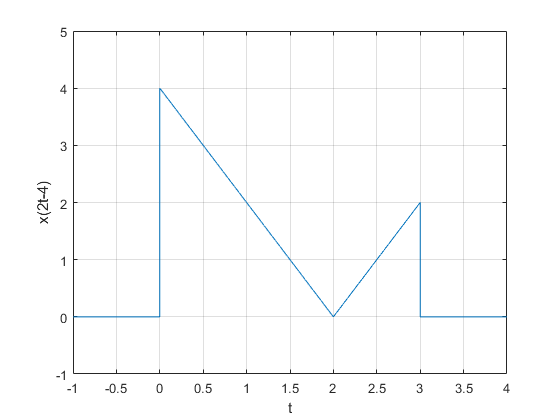 Inciso e) Señal x(2-t)
x=@(t) ((-t).*((t<0)&(t>-4))) +((t).*((t>0)&(t<2)));
t=[-10:0.0001:10];
x(2-t);
plot(t,x(2-t));
xlabel('t');
ylabel('x(2-t)');
axis([-0.5 6.5 -1 5]);
grid on;
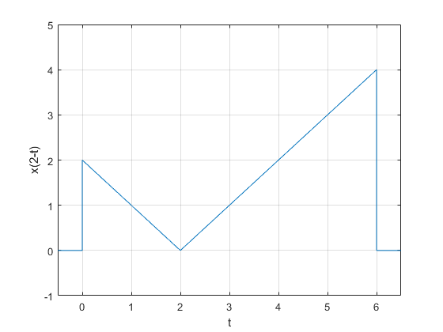 Problema 6
Escriba una función que se llame energia que reciba como argumento una función (anonima o simbolica) y que regrese el calculo de la energía, para esto puede resultar útil investigar las instrucciones int , integral. Se presupone utilizar el código solo con funciones de energia. Muestre el código sin ejecutar, y posteriormente resuelva el problema 1.1.3
syms t;
f=input("Introduce la función a la que se le va a calcular la energia: ");
a=input("Introduce el limite de integración inferior: ");
b=input("Introduce el limite de integración superior: ");
energia=@(f) int(f.^2,t,a,b);
energia(f);
fprintf('\n La energia de la función es: %f', energia(f));
fprintf('\n');
Problema 1.1.3 Inciso a) Instrucciones del problema:
Encuentre las energías del par de señales x (t) e y (t) representadas en las figuras P1.1-3a y P1.1-3b. Dibuja y encuentra las energías de las señales x (t) + y (t) yx (t) - y (t).
Primer par de funciones Calculando la energia de x(t)
t=[-4:0.01:4];
x=@(t) ((1).*((t>=0)&(t<=2)));
x(t);
x_cuadrada=@(t) ((1).*((t>=0)&(t<=2))).^2;
energia_x = integral(x_cuadrada,0,2);
fprintf('\n La energia de la función x(t) es: %f', energia_x);
fprintf('\n');
plot(t,x(t));
xlabel('t');
ylabel('x(t)');
grid on;
axis([-1 3 -1 2]);
La energia de la función x(t) es: 2.000000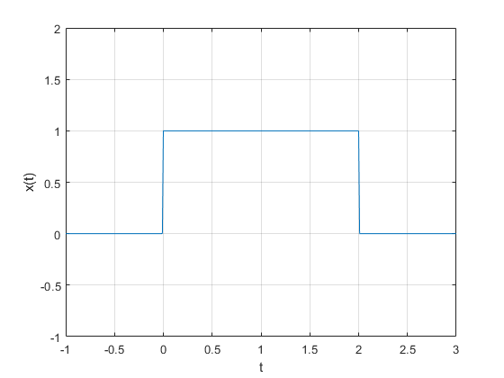
Calculando la energia de y(t)
t=[-4:0.01:4];
y=@(t) ((1).*((t>=0)&(t<=1))) + ((-1).*((t>=1)&(t<=2)));
y(t);
y_cuadrada=@(t) ( ((1).*((t>=0)&(t<=1))) + ((-1).*((t>1)&(t<=2))) ).^2;
energia_y = integral(y_cuadrada,0,2);
fprintf('\n La energia de la función y(t) es: %f', energia_y);
fprintf('\n');
plot(t,y(t));
xlabel('t');
ylabel('y(t)');
grid on;
axis([-1 3 -2 2]);
La energia de la función y(t) es: 2.000000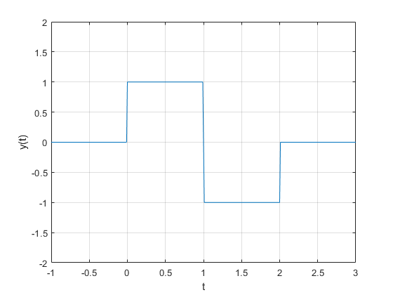
Calculando la energia de x(t) + y(t)
t=[-10:0.01:10];
f=@(t) ((1).*((t>=0)&(t<=2))) + ((1).*((t>=0)&(t<=1))) + ((-1).*((t>=1)&(t<=2))) ;
f(t);
f_cuadrada=@(t) ( ((1).*((t>=0)&(t<=2))) + ((1).*((t>=0)&(t<=1))) + ((-1).*((t>=1)&(t<=2))) ).^2 ;
energia_suma = integral(f_cuadrada,-Inf,Inf);
fprintf('\n La energia de la función x(t) + y(t) es: %f', energia_suma);
fprintf('\n');
plot(t,f(t));
xlabel('t');
ylabel('x(t) + y(t)');
grid on;
axis([-0.5 1.5 -0.5 2.5]);
La energia de la función x(t) + y(t) es: 3.999999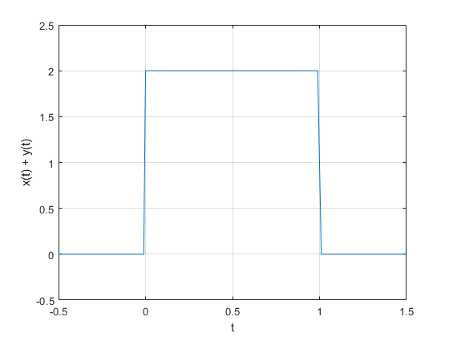
Calculando la energia de x(t) - y(t)
t=[-10:0.001:10];
f=@(t) ((1).*((t>=0)&(t<=2))) - ( ((1).*((t>=0)&(t<=1))) + ((-1).*((t>=1)&(t<=2))) );
f(t);
f_cuadrada=@(t) ( ((1).*((t>=0)&(t<=2))) - ( ((1).*((t>=0)&(t<=1))) + ((-1).*((t>=1)&(t<=2))) ) ).^2 ;
energia_resta = integral(f_cuadrada,-Inf,Inf);
fprintf('\n La energia de la función x(t) - y(t) es: %f', energia_resta);
fprintf('\n');
plot(t,f(t));
xlabel('t');
ylabel('x(t) - y(t)');
grid on;
axis([0.8 2.2 -0.5 2.5]);
La energia de la función x(t) - y(t) es: 3.999999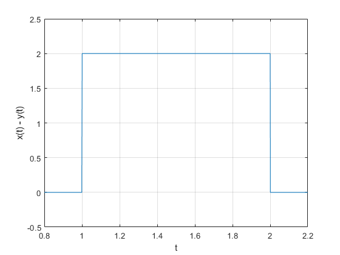
Segundo par de funciones Calculando la energia de x(t)
t=[-10:0.01:10];
x=@(t) ((sin(t)).*((t>=0)&(t<=2*pi)));
x(t);
x_cuadrada=@(t) ((sin(t)).*((t>=0)&(t<=2*pi))).^2;
energia_x = integral(x_cuadrada,0,2*pi);
fprintf('\n La energia de la función x(t) es: %f', energia_x);
fprintf('\n');
plot(t,x(t));
xlabel('t');
ylabel('x(t)');
grid on;
axis([0 2*pi -2 2]);
La energia de la función x(t) es: 3.141593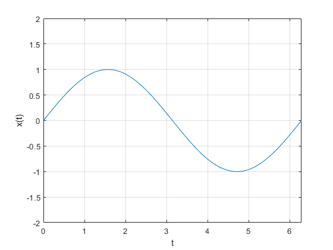
Calculando la energia de y(t)
t=[-10:0.01:10];
y=@(t) ((1).*((t>=0)&(t<=2*pi)));
y(t);
y_cuadrada=@(t) ((1).*((t>=0)&(t<=2*pi))).^2;
energia_y = integral(y_cuadrada,0,2*pi);
fprintf('\n La energia de la función y(t) es: %f', energia_y);
fprintf('\n');
plot(t,y(t));
xlabel('t');
ylabel('y(t)');
grid on;
axis([-1 2.5*pi -2 2]);
La energia de la función y(t) es: 6.283185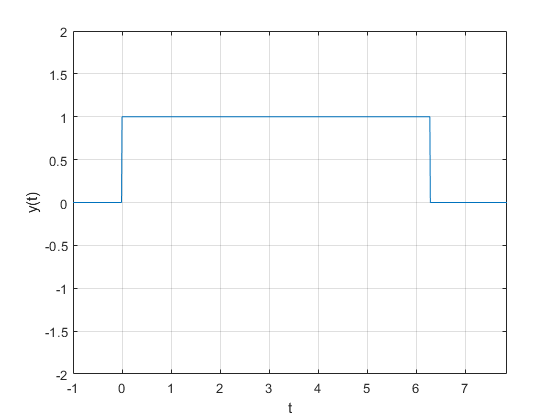
Calculando la energia de x(t) + y(t)
t=[-10:0.01:10];
f=@(t) ((sin(t)).*((t>=0)&(t<=2*pi))) + ((1).*((t>=0)&(t<=2*pi)));
f(t);
f_cuadrada=@(t) ( ((sin(t)).*((t>=0)&(t<=2*pi))) + ((1).*((t>=0)&(t<=2*pi))) ).^2 ;
energia_suma = integral(f_cuadrada,-Inf,Inf);
fprintf('\n La energia de la función x(t) + y(t) es: %f', energia_suma);
fprintf('\n');
plot(t,f(t));
xlabel('t');
ylabel('x(t) + y(t)');
grid on;
axis([-1 7 -0.5 2.5]);
La energia de la función x(t) + y(t) es: 9.424792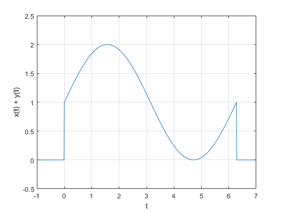
Calculando la energia de x(t) - y(t)
t=[-10:0.01:10];
f=@(t) ((sin(t)).*((t>=0)&(t<=2*pi))) - ((1).*((t>=0)&(t<=2*pi)));
f(t);
f_cuadrada=@(t) ( ((sin(t)).*((t>=0)&(t<=2*pi))) - ((1).*((t>=0)&(t<=2*pi))) ).^2 ;
energia_resta = integral(f_cuadrada,-Inf,Inf);
fprintf('\n La energia de la función x(t) - y(t) es: %f', energia_resta);
fprintf('\n');
plot(t,f(t));
xlabel('t');
ylabel('x(t) - y(t)');
grid on;
axis([-1 7 -2.5 0.5]);
La energia de la función x(t) - y(t) es: 9.424792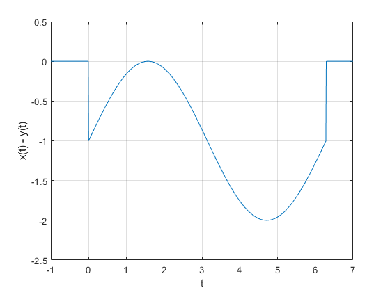
Inciso b) Tercer par de funciones Calculando la energia de x(t)
t=[-10:0.01:10];
x=@(t) ((sin(t)).*((t>=0)&(t<=pi)));
x(t);
x_cuadrada=@(t) ((sin(t)).*((t>=0)&(t<=pi))).^2;
energia_x = integral(x_cuadrada,0,pi);
fprintf('\n La energia de la función x(t) es: %f', energia_x);
fprintf('\n');
plot(t,x(t));
xlabel('t');
ylabel('x(t)');
grid on;
axis([-0.5 3.5 -0.5 1.5]);
La energia de la función x(t) es: 1.570796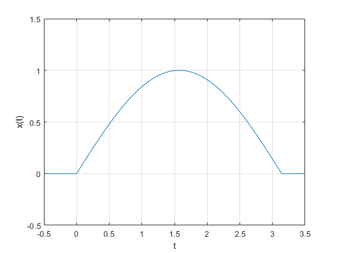
Calculando la energia de y(t)
t=[-10:0.01:10];
y=@(t) ((1).*((t>=0)&(t<=pi)));
y(t);
y_cuadrada=@(t) ((1).*((t>=0)&(t<=pi))).^2;
energia_y = integral(y_cuadrada,0,pi);
fprintf('\n La energia de la función x(t) es: %f', energia_y);
fprintf('\n');
plot(t,y(t));
xlabel('t');
ylabel('y(t)');
grid on;
axis([-0.5 3.5 -0.5 1.5]);
La energia de la función x(t) es: 3.141593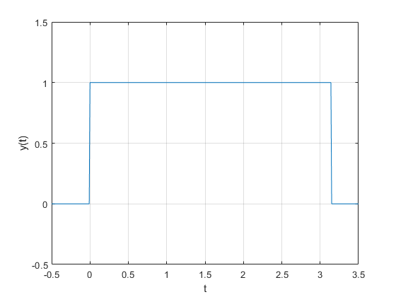
Calculando la energia de x(t) + y(t)
t=[-10:0.01:10];
f=@(t) ((sin(t)).*((t>=0)&(t<=pi))) + ((1).*((t>=0)&(t<=pi)));
f(t);
f_cuadrada=@(t) ( ((sin(t)).*((t>=0)&(t<=pi))) + ((1).*((t>=0)&(t<=pi))) ).^2 ;
energia_suma = integral(f_cuadrada,-Inf,Inf);
fprintf('\n La energia de la función x(t) + y(t) es: %f', energia_suma);
fprintf('\n');
plot(t,f(t));
xlabel('t');
ylabel('x(t) + y(t)');
grid on;
axis([-1 4 -0.5 2.5]);
La energia de la función x(t) + y(t) es: 8.712393

Calculando la energia de x(t) - y(t)
t=[-10:0.01:10];
f=@(t) ((sin(t)).*((t>=0)&(t<=pi))) - ((1).*((t>=0)&(t<=pi)));
f(t);
f_cuadrada=@(t) ( ((sin(t)).*((t>=0)&(t<=pi))) - ((1).*((t>=0)&(t<=pi))) ).^2 ;
energia_resta = integral(f_cuadrada,-Inf,Inf);
fprintf('\n La energia de la función x(t) - y(t) es: %f', energia_resta);
fprintf('\n');
plot(t,f(t));
xlabel('t');
ylabel('x(t) - y(t)');
grid on;
axis([-0.5 3.5 -1.5 0.5]);
La energia de la función x(t) - y(t) es: 0.712389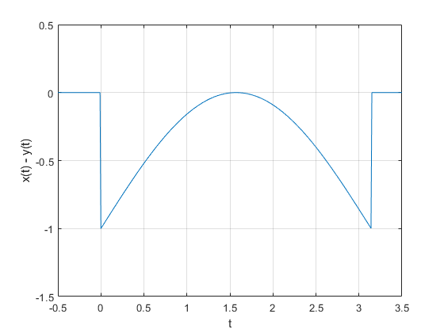
Problema 7
Escriba una función que se llame potencia que reciba como argumento una función (anonima o simbolica) y que regrese el calculo de la potencia para esto puede resultar útil investigar las instrucciones int , integral. Se presupone utilizar el código solo con funciones de potencia. Muestre el código sin ejecutar, y posteriormente resuelva el problema 1.1.4
syms t; f=input("Introduce la función a la que se le va a calcular la potencia: "); T=input("Introduce el periodo de la señal: "); potencia=@(f) (1/T)*int(f.^2,t,(-T/2),(T/2)); potencia(f); fprintf('\n La potencia de la función es: %f', potencia(f)); fprintf('\n');
Problema 1.1.4 Encuentre la potencia de la señal periódica x (t) que se muestra en la figura P1.1-4. Encuentre también las potencias y los valores rms de:
a. -x(t)
b. 2x(t)
c. cx(t)
t=[-2:0.01:2];
x=@(t) ((t.^3).*((t>=-2)&(t<=2)));
x(t);
plot(t,x(t));
xlabel('t');
ylabel('x(t)');
grid on;
axis([-2 2 -8 8]);
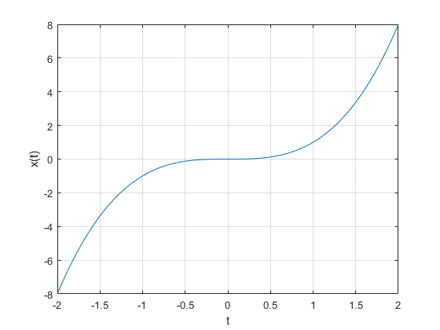 Potencia y valor rms de la señal original
syms t; x_original=t.^3; potencia=@(x_original) (1/4)*int(x_original.^2,t,(-4/2),(4/2)); valor_potencia=potencia(x_original); valor_rms=sqrt(valor_potencia); fprintf('\n La potencia de la función x(t) es: %f', valor_potencia); fprintf('\n'); fprintf('\n El valor rms de la función x(t) es: %f', valor_rms); fprintf('\n');
La potencia de la función x(t) es: 9.142857 El valor rms de la función x(t) es: 3.023716
Potencia y valor rms de -x(t)
syms t; x_original=t.^3; x_cambiada=-(x_original); potencia=@(x_cambiada) (1/4)*int(x_cambiada.^2,t,(-4/2),(4/2)); valor_potencia=potencia(x_cambiada); valor_rms=sqrt(valor_potencia); fprintf('\n La potencia de la función -x(t) es: %f', valor_potencia); fprintf('\n'); fprintf('\n El valor rms de la función -x(t) es: %f', valor_rms); fprintf('\n');
La potencia de la función -x(t) es: 9.142857 El valor rms de la función -x(t) es: 3.023716
Potencia y valor rms de 2x(t)
syms t; x_original=t.^3; x_cambiada= 2.*(x_original); potencia=@(x_cambiada) (1/4)*int(x_cambiada.^2,t,(-4/2),(4/2)); valor_potencia=potencia(x_cambiada); valor_rms=sqrt(valor_potencia); fprintf('\n La potencia de la función 2x(t) es: %f', valor_potencia); fprintf('\n'); fprintf('\n El valor rms de la función 2x(t) es: %f', valor_rms); fprintf('\n');
La potencia de la función 2x(t) es: 36.571429 El valor rms de la función 2x(t) es: 6.047432
Potencia y valor rms de cx(t)
syms t c; x_original=t.^3; x_cambiada= c.*(x_original); potencia=@(x_cambiada) (1/4)*int(x_cambiada.^2,t,(-4/2),(4/2)); valor_potencia=potencia(x_cambiada); valor_rms=sqrt(valor_potencia); fprintf('\n La potencia de la función cx(t) es: %s', valor_potencia); fprintf('\n'); fprintf('\n El valor rms de la función cx(t) es: %s', valor_rms); fprintf('\n');
La potencia de la función cx(t) es: (64*c^2)/7 El valor rms de la función cx(t) es: ((64*c^2)/7)^(1/2)
Referencias
[1] "MATLAB", Es.wikipedia.org, 2019. [Online]. Available: https://es.wikipedia.org/wiki/MATLAB. [Accessed: 24- Sep- 2019].
[2] "3 Alternativas de código abierto a MATLAB", Maslinux.es, 2019. [Online]. Available: https://maslinux.es/3-alternativas-de-codigo-abierto-a-matlab/. [Accessed: 24- Sep- 2019].